Orion's journey to the Moon
NASA's Artemis I, 25 days, three phases. Earth → outbound transit → distant retrograde orbit → return → splashdown.
▸ Prompt
"Draw me NASA's Artemis I Orion spacecraft journey to the Moon and back. Show the outbound transit, a wide retrograde orbit, and the return arc. Beautiful for a 5-year-old, meaningful to a 70-year-old."
data.shape: "function"
Read →

A heartbeat at rest
FitzHugh-Nagumo (1961) — the relaxation oscillator that produces the spike-and-recover rhythm. 60 BPM. Lub-dub.
▸ Prompt
"Draw me a heartbeat — a resting human heart at 60 BPM. Use FitzHugh-Nagumo so the trace has the real spike-and-recover rhythm. Beautiful for a child, meaningful for a grandparent."
data.shape: "trajectory"
Read →

How the leopard got his spots
Kipling's 1902 just-so story, Turing's 1952 chemistry. A single seed in a uniform field, the Gray-Scott PDE, and 400 steps later: spots.
▸ Prompt
"Draw me how the leopard got his spots. Use Gray-Scott reaction-diffusion at F = k = 0.062 — the leopard-spots regime. Start from a single seed, run 400 steps, let the pattern emerge."
data.shape: "pde-solve"
Read →

A sunflower's secret math
Vogel's 1979 model — every seed placed at √n and n × 137.5°. The only angle that fills a disc without leaving gaps.
▸ Prompt
"Draw me how a sunflower packs its seeds. Each seed n at radius √n, angle n × 137.5° (the golden angle). 200 seeds. Show why this angle and only this angle works."
data.shape: "recurrence"
Read →